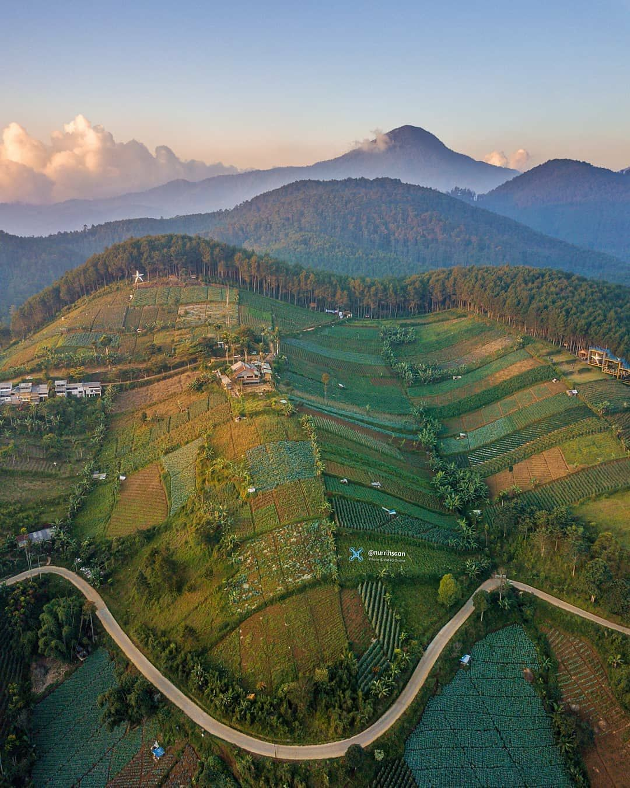
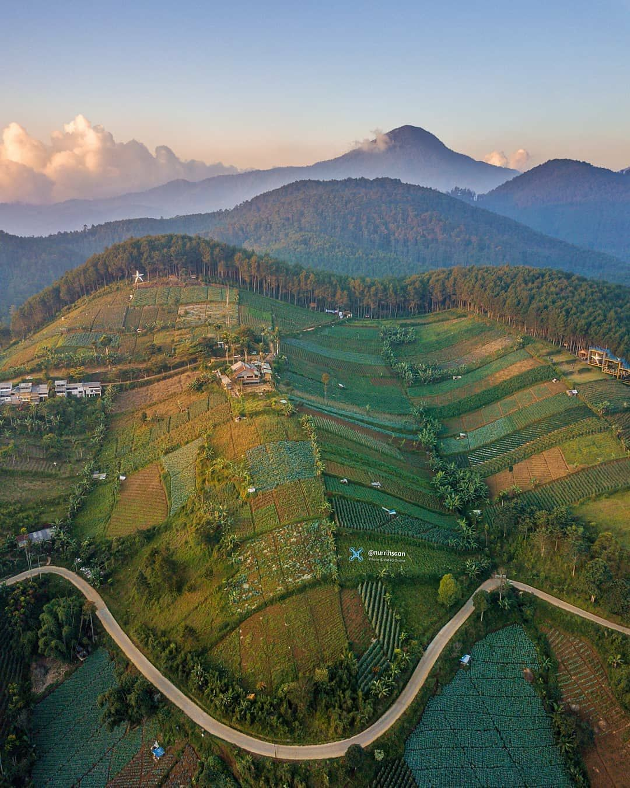

Because of the peaceful and peaceful atmosphere of the night in Moko Hill, as well as the beautiful night stars. Then you who like photography then there is no harm if trying to hunt Milky Way from the height of Moko Highland. Lots of good photos that can be immortalized from this place. Capturing is one of the best things to do in Moko Highland and this place including as one of the best things to do at Bangdung Night.
If you want a little patience, you do not need to hurry to get down from this hill. From the top of Moko Hill, you can enjoy the sensation of sunrise hunting in the morning. Beautiful orange sky color you can meet, still with the background stretch of Bandung city view from above. Sudden dew is a bonus for you who have been to the top of Bukit Moko. Sunrise hunting is one of the best Moko Hill activity.
For you who have a soul of adventure, Bukit Moko also provides its own arena. Yes, there you can be trekking the vast and lush pine forest. The offerings of pine trees line up neatly, some of which have colorful leaves. In the afternoon it is the perfect time for trekking in the Bukit Moko pine forest path where the air temperature is very cool.
 
